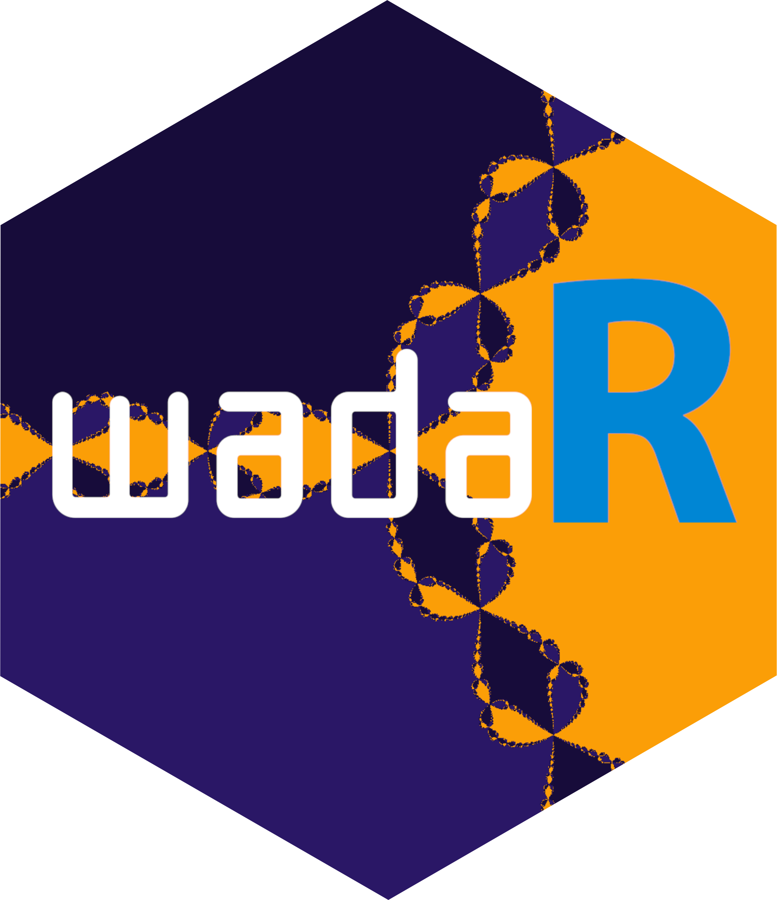

wadaR 
Wada basin detection in dynamical systems


wadaR implements multiple computational methods for detecting Wada basins of attraction in dynamical systems. Wada basins are a remarkable type of fractal basin structure where a single boundary simultaneously separates three or more basins, so that every boundary point is arbitrarily close to all attractors. This extreme form of unpredictability has profound implications for chaos theory, control systems, and predictability in nonlinear dynamics.
Key features
Wada detection methods
- Grid method: Tests whether a third basin can always be found between any two basins at finer resolutions
- Merging method: Compares boundary structure when basins are merged using Hausdorff distance
- Saddle-straddle method: Tracks chaotic saddles on basin boundaries to verify uniqueness
Example dynamical systems
- Forced damped pendulum: The canonical example for Wada basins with three coexisting attractors
- Henon-Heiles system: Hamiltonian system with escape basins exhibiting Wada boundaries
- Newton fractals: Mathematically proven Wada basins from Newton-Raphson iteration
- Multispecies competition: Huisman-Weissing ecological model with fractal boundaries between outcomes
High-performance implementation
- OpenMP parallelization: All computationally intensive operations run in parallel
- Rcpp integration: Core algorithms implemented in C++ for maximum performance
- ggplot2 visualization: Publication-quality plots with customizable color palettes
See the accompanying vignette("wada-basins") for comprehensive mathematical theory, algorithms, and extensive examples.
Installation
# Check if devtools is already installed. If not, install it.
if (!requireNamespace("devtools", quietly = TRUE)) {
install.packages("devtools")
}
# Install from GitHub (development version)
devtools::install_github("robustecologies/wadaR")
# Or install locally
devtools::install()Mathematical background
What are Wada basins?
For a dynamical system with attractors \(A_1, \ldots, A_{N_A}\), the basin of attraction \(B_i\) is the set of initial conditions converging to \(A_i\):
\[B_i = \{x : \lim_{t \to \infty} \phi_t(x) \in A_i\}\]
The basins have the Wada property if every boundary point is simultaneously on the boundary of all basins:
\[\partial B_1 = \partial B_2 = \cdots = \partial B_{N_A}\]
Why does it matter?
Wada basins represent an extreme form of final-state sensitivity: arbitrarily small uncertainties in initial conditions can lead to convergence to any of the system’s attractors. This has implications for:
- Climate prediction: Small errors can lead to qualitatively different outcomes
- Ecological dynamics: Ecosystems with multiple stable states may have Wada boundaries
- Engineering control: Understanding basin structure is crucial for robust design
- Celestial mechanics: Spacecraft trajectory planning near Wada boundaries
Quick start
Example 1: Forced damped pendulum
The forced damped pendulum is the canonical example of a system with Wada basins:
\[\ddot{x} + \gamma \dot{x} + \sin(x) = F \cos(t)\]
# Create system with Wada basins (F = 1.66)
pendulum <- forced_damped_pendulum(forcing = 1.66, damping = 0.2)
print(pendulum$description)
# Compute basins of attraction
basins <- compute_basins(
pendulum,
x_range = c(-pi, pi),
y_range = c(-3, 3),
resolution = 200,
verbose = FALSE
)
# Visualize with custom colors
plot(basins,
title = "Wada basins: forced damped pendulum",
colors = c("#E63946", "#457B9D", "#2A9D8F"))Example 2: Test for Wada property
# Apply the grid method
result <- wada_grid_method(basins, verbose = FALSE)
print(result)
# Visualize boundary classification
plot(result, basins = basins)Example 3: Newton fractal
Newton fractals are mathematically proven to have Wada basins for \(n \geq 3\) roots:
# Compute Newton fractal basins
newton_basins <- compute_newton_basins(
n_roots = 3,
x_range = c(-2, 2),
y_range = c(-2, 2),
resolution = 400
)
# Visualize
plot(newton_basins,
title = expression(paste("Newton fractal: ", z^6 - 1 == 0)),
colors = c("#264653", "#E9C46A", "#E76F51")) +
theme_void() +
theme(legend.position = "none")Available methods
1. Grid method (Daza et al., 2015)
Tests whether a third color can be found between any two colors at finer resolutions:
result_grid <- wada_grid_method(basins, verbose = FALSE)
cat(sprintf("W_3 = %.4f (Wada if close to 1)\n", result_grid$W_m[3]))
cat(sprintf("Is Wada: %s\n", result_grid$is_wada))2. Merging method (Daza et al., 2018)
Compares slim boundaries when basins are merged:
result_merge <- wada_merging_method(basins, verbose = FALSE)
cat(sprintf("Relative difference = %.4f\n", result_merge$relative_diff))
cat(sprintf("Is Wada: %s\n", result_merge$is_wada))Computational complexity
Understanding the computational cost helps choose appropriate resolutions:
| Function | Complexity | Description |
|---|---|---|
compute_basins() |
\(O(N^2 \cdot T/\Delta t)\) | \(N^2\) grid points, each integrated for \(T/\Delta t\) RK4 steps |
compute_newton_basins() |
\(O(N^2 \cdot k)\) | \(N^2\) points, \(k\) Newton iterations (fast, no ODE) |
compute_competition_basins() |
\(O(N^2 \cdot T/\Delta t \cdot n_{vars})\) | \(N^2\) points, long integration (\(T \sim 2000\)), 8-11 state variables |
wada_grid_method() |
\(O(B \cdot 2^d)\) | \(B\) boundary boxes, \(d\) refinement depth |
wada_merging_method() |
\(O(N_A \cdot B^2)\) | \(N_A\) basins, pairwise Hausdorff on \(B\) boundary points |
wada_straddle_method() |
\(O(N_A \cdot P \cdot T/\Delta t)\) | \(N_A\) saddles, \(P\) points each, full ODE integration |
basin_entropy() |
\(O(N^2 / s^2)\) | Fast, just counting over boxes of size \(s\) |
where \(N\) = resolution, \(T\) = t_max, \(\Delta t\) = dt, \(B\) = boundary points, \(d\) = max_refinements, \(P\) = n_points, \(n_{vars}\) = number of state variables.
Typical runtimes (8-core CPU, resolution 300): - compute_basins(): 5-30 seconds - compute_newton_basins(): <1 second - compute_competition_basins(): 10-60 minutes (8-species scenario, resolution 200) - wada_grid_method(): 2-10 seconds - wada_merging_method(): 1-5 seconds - wada_straddle_method(): 1-10 minutes
Method selection guide
| Method | Best for | Speed | Accuracy | Input required |
|---|---|---|---|---|
| Grid | Final confirmation | Medium | High | Basins matrix |
| Merging | Quick screening | Fast | Medium | Basins matrix |
| Saddle-straddle | Dynamical insight | Slow | High | System + attractors |
Recommended workflow:
- Start with merging method for quick screening
- Confirm with grid method for higher accuracy
- Use saddle-straddle when you need dynamical insight
Common workflows
Workflow 1: Complete Wada analysis
# Create system
pendulum <- forced_damped_pendulum(forcing = 1.66)
# Compute basins
basins <- compute_basins(pendulum, c(-pi, pi), c(-3, 3),
resolution = 200, verbose = FALSE)
# Run all detection methods
cat("=== Wada detection results ===\n")
r1 <- wada_grid_method(basins, verbose = FALSE)
r2 <- wada_merging_method(basins, verbose = FALSE)
cat(sprintf("Grid method: W_3 = %.3f, Wada = %s\n", r1$W_m[3], r1$is_wada))
cat(sprintf("Merging method: rel_diff = %.3f, Wada = %s\n", r2$relative_diff, r2$is_wada))Workflow 2: Comparing parameter regimes
# Compare Wada (F=1.66) vs Partial Wada (F=1.71)
systems <- list(
"F=1.66" = forced_damped_pendulum(forcing = 1.66),
"F=1.71" = forced_damped_pendulum(forcing = 1.71)
)
for (name in names(systems)) {
basins <- compute_basins(systems[[name]], c(-pi, pi), c(-3, 3),
resolution = 150, verbose = FALSE)
result <- wada_grid_method(basins, verbose = FALSE)
cat(sprintf("%s: W_3 = %.3f, Wada = %s\n", name, result$W_m[3], result$is_wada))
}Workflow 3: Henon-Heiles escape basins
# Henon-Heiles system above critical energy
hh <- henon_heiles_system(energy = 0.2)
basins_hh <- compute_basins(hh, c(-0.3, 0.3), c(-0.3, 0.3),
resolution = 200, t_max = 200, verbose = FALSE)
# Test for Wada
result_hh <- wada_merging_method(basins_hh, verbose = FALSE)
cat(sprintf("Henon-Heiles: rel_diff = %.3f, Wada = %s\n",
result_hh$relative_diff, result_hh$is_wada))
# Visualize
plot(basins_hh, title = "Henon-Heiles escape basins",
colors = c("#F72585", "#7209B7", "#3A0CA3"))Performance tips
- Start with lower resolution (100-200) for exploration, increase for publication
- Use merging method first for quick screening (no dynamics integration)
- Grid method gives most reliable results but is slower
- Saddle-straddle requires system dynamics, use for detailed analysis
- Newton fractals are fastest to compute (no ODE integration)
Function reference
Basin computation
| Function | Description |
|---|---|
compute_basins() |
Compute basins of attraction for 2D dynamical systems |
compute_newton_basins() |
Specialized function for Newton fractal basins |
get_boundary() |
Extract boundary points from basin matrix |
merge_basins() |
Create two-color basin maps for analysis |
Wada detection
| Function | Description |
|---|---|
wada_grid_method() |
Grid refinement method |
wada_merging_method() |
Boundary merging method |
wada_straddle_method() |
Saddle-straddle method |
detect_wada() |
Unified interface for multiple methods |
hausdorff_distance() |
Compute Hausdorff distance between point sets |
basin_entropy() |
Quantify unpredictability using basin entropy |
Example systems
| Function | Description |
|---|---|
forced_damped_pendulum() |
Forced damped pendulum (Wada for F \(\approx\) 1.66) |
henon_heiles_system() |
Henon-Heiles Hamiltonian (escape basins) |
newton_fractal_system() |
Newton method fractals for \(z^n - 1 = 0\) |
multispecies_competition() |
Huisman-Weissing resource competition (ecological Wada basins) |
Ecological competition
| Function | Description |
|---|---|
multispecies_competition() |
Create 5-species or 8-species competition scenarios |
compute_competition_basins() |
Compute basins of attraction for competition outcomes |
simulate_competition() |
Integrate competition dynamics and return time series |
Theoretical references
This package implements algorithms from:
Kennedy, J., & Yorke, J. A. (1991). Basins of Wada. Physica D, 51, 213-225. doi:10.1016/0167-2789(91)90234-Z
Daza, A., et al. (2015). Testing for basins of Wada. Scientific Reports, 5, 16579. doi:10.1038/srep16579
Daza, A., et al. (2018). Ascertaining when a basin is Wada: The merging method. Scientific Reports, 8, 9954. doi:10.1038/s41598-018-28119-0
Wagemakers, A., et al. (2020). The saddle-straddle method to test for Wada basins. CNSNS, 84, 105167. doi:10.1016/j.cnsns.2020.105167
Getting help
# Function documentation
?compute_basins
?wada_grid_method
?wada_merging_method
?wada_straddle_method
# Package overview
?wadaRContributing
Contributions are welcome! Please feel free to:
- Report bugs at https://github.com/robustecologies/wadaR/issues
- Suggest new features
- Submit pull requests
Author
Pablo Almaraz Email: pablo.almaraz@csic.es, RElab ORCID: 0000-0003-1416-2695